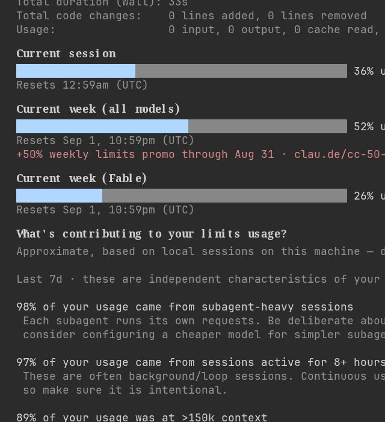

공식 요금표 표기 그대로 옮기고, 제 사용량 화면을 그대로 올렸습니다. 배수를 제가 재서 붙인 값은 없습니다.
| 플랜 | 월 요금 | 페이지 표기 |
|---|---|---|
| Pro | $17 (연간 결제, $200 선결제) / $20 (월간) | For everyday productivity |
| Max | $100 부터 | "Choose 5x or 20x more usage than Pro*" |
출처: anthropic.com/pricing Individual 탭, 2026년 8월 29일 캡처. 가격과 조건은 바뀔 수 있습니다.
한도는 주 단위로 쌓입니다(앱의 사용량 화면에 "Weekly limits" 로 표시). 그래서 자동화를 돌려 하루에 다 써버리면 남은 날은 리셋까지 비어 있게 됩니다. 물어보는 정도로 쓰면 이 일이 안 생기고, 매일 돌리는 자동화가 있으면 매주 생깁니다.
클로드 코드의 /usage 화면입니다. 세션 34~36%, 주간 한도(모든 모델) 52%, Fable 26%, 리셋은 9월 1일. 이메일·경로는 잘라냈습니다.

앱에서는 설정 → 사용량에서 같은 값을 볼 수 있습니다.
클로드 앱 → 설정 → 사용량. 현재 세션과 주간 한도가 % 로 나오고, 리셋 시각이 같이 적혀 있습니다. 한도가 끝나면 대화창에 안내 메시지가 뜹니다.